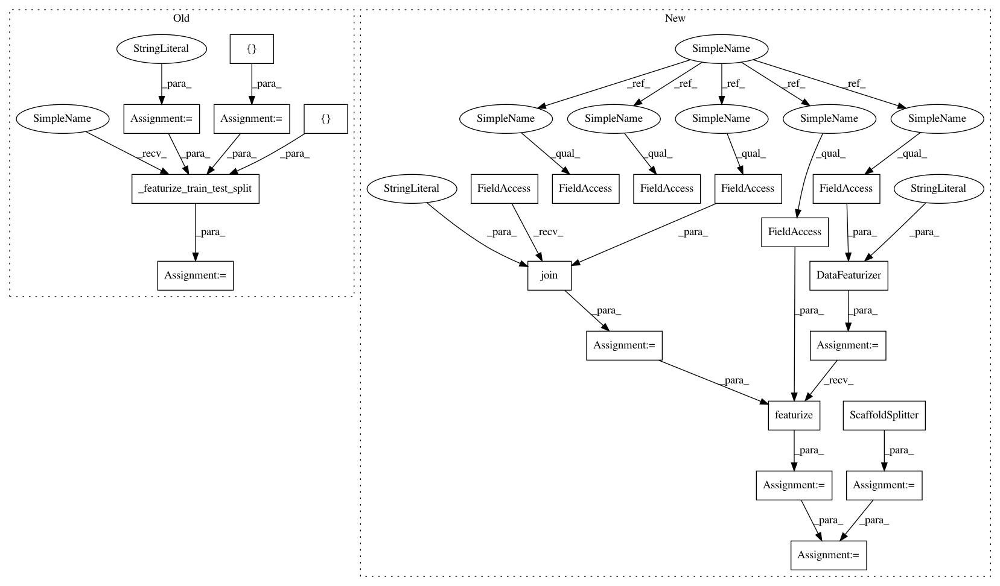

ee2bc2a8daaba5717e49917831ddf8229d1ebe70,deepchem/hyperparameters/tests/test_hyperparam_opt.py,TestHyperparamOptAPI,test_singletask_sklearn_rf_ECFP_regression_hyperparam_opt,#TestHyperparamOptAPI#,49
Before Change
Test of hyperparam_opt with singletask RF ECFP regression API.
splittype = "scaffold"
compound_featurizers = [CircularFingerprint(size=1024)]
complex_featurizers = []
input_transformer_classes = []
output_transformer_classes = [NormalizationTransformer]
tasks = ["log-solubility"]
task_type = "regression"
task_types = {task: task_type for task in tasks}
input_file = "example.csv"
train_dataset, valid_dataset, _, output_transformers, = \
self._featurize_train_test_split(
splittype, compound_featurizers,
complex_featurizers, input_transformer_classes,
output_transformer_classes, input_file, tasks)
params_dict = {
"n_estimators": [10, 100],
"max_features": ["auto"],
"data_shape": train_dataset.get_data_shape()
After Change
Test hyperparameter optimization API.
def test_singletask_sklearn_rf_ECFP_regression_hyperparam_opt(self):
Test of hyperparam_opt with singletask RF ECFP regression API.
splittype = "scaffold"
featurizers = [CircularFingerprint(size=1024)]
tasks = ["log-solubility"]
task_type = "regression"
task_types = {task: task_type for task in tasks}
input_file = os.path.join(self.current_dir, "example.csv")
featurizer = DataFeaturizer(tasks=tasks,
smiles_field=self.smiles_field,
featurizers=featurizers,
verbosity="low")
dataset = featurizer.featurize(input_file, self.data_dir)
splitter = ScaffoldSplitter()
train_dataset, valid_dataset, test_dataset = splitter.train_valid_test_split(
dataset, self.train_dir, self.valid_dir, self.test_dir)
input_transformers = []
output_transformers = [
NormalizationTransformer(transform_y=True, dataset=train_dataset)]
In pattern: SUPERPATTERN
Frequency: 3
Non-data size: 21
Instances
Project Name: deepchem/deepchem
Commit Name: ee2bc2a8daaba5717e49917831ddf8229d1ebe70
Time: 2016-05-30
Author: bharath.ramsundar@gmail.com
File Name: deepchem/hyperparameters/tests/test_hyperparam_opt.py
Class Name: TestHyperparamOptAPI
Method Name: test_singletask_sklearn_rf_ECFP_regression_hyperparam_opt
Project Name: deepchem/deepchem
Commit Name: 4a1b752726028f02bd04fc7b766b048a859e7f97
Time: 2016-05-29
Author: bharath.ramsundar@gmail.com
File Name: deepchem/models/tests/test_api.py
Class Name: TestModelAPI
Method Name: test_singletask_keras_mlp_USF_regression_API
Project Name: deepchem/deepchem
Commit Name: ee2bc2a8daaba5717e49917831ddf8229d1ebe70
Time: 2016-05-30
Author: bharath.ramsundar@gmail.com
File Name: deepchem/hyperparameters/tests/test_hyperparam_opt.py
Class Name: TestHyperparamOptAPI
Method Name: test_singletask_sklearn_rf_ECFP_regression_hyperparam_opt
Project Name: deepchem/deepchem
Commit Name: 4a1b752726028f02bd04fc7b766b048a859e7f97
Time: 2016-05-29
Author: bharath.ramsundar@gmail.com
File Name: deepchem/models/tests/test_api.py
Class Name: TestModelAPI
Method Name: test_singletask_sklearn_rf_RDKIT_descriptor_regression_API